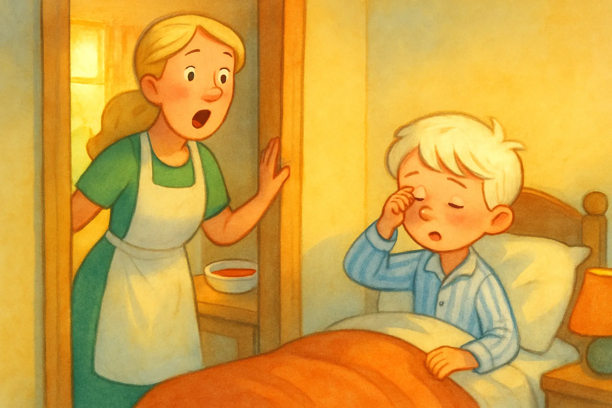
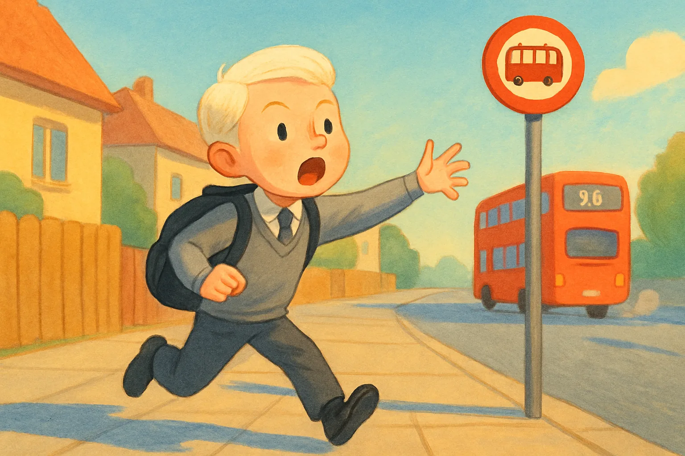

The Morning Rush

One day, Malfoy was sleeping while dreaming of flying on a broomstick. His alarm was blaring, but he was still in a deep sleep. While he was sleeping and the alarm clock went on beeping, it slowly turned off. Malfoy's mother was preparing breakfast.

Malfoy's mother thought that it was strange that he did not come for breakfast as it was his most favourite type of soup, gazpacho. So, Malfoy's mother went to his room. To her surprise, he was still sleeping. Mother shouted, “Malfoy! Hurry up! It is time for school. Your breakf-” Before she could finish her sentence, Malfoy woke up and said, “No time for breakfast mother!” Malfoy immediately went to take a wash and get dressed. After that, Malfoy immediately went downstairs to go to school.
Malfoy thought, feeling scared, “I really hope I will not be late as then the head master, Professor Dumbledore might give me detention.”

He ran to the bus stop. Alas, the bus 98 that Malfoy took to school was already gone. He could see the smoke coming from the bus 98. “Hey, wait for me!” Malfoy shouted, but the bus was too far. Malfoy had to walk back to the bus stop and wait for the next bus to come. He regretted watching videos all night and burning the midnight oil. He thought once again, “I will surely get detention, but I deserve it.”
Experience is the best teacher, after this day, Malfoy swore never to play games late at night, went to bed early, and became a good child.
The End